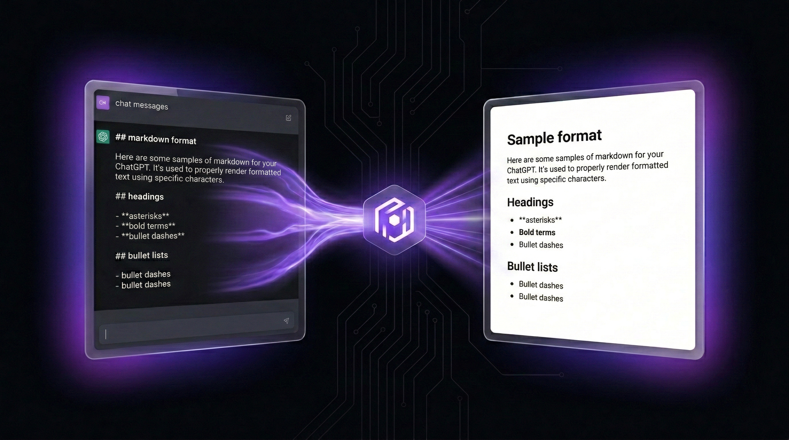
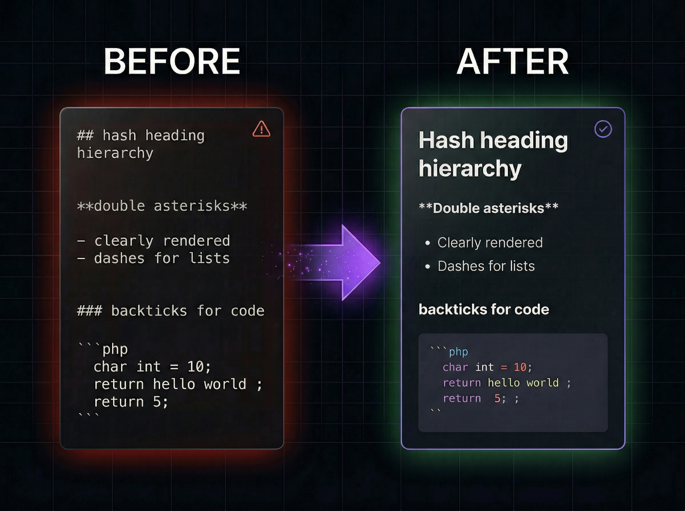

Problem, który znasz za dobrze
Prosisz ChatGPT o napisanie maila, podsumowania spotkania albo fragmentu dokumentacji. Odpowiedź wygląda świetnie - nagłówki, listy, pogrubienia. Kopiujesz ją i wklejasz do Google Docs. I nagle - zamiast czytelnego dokumentu widzisz ścianę tekstu z gwiazdkami, hashami i myślnikami.
To nie jest błąd ChatGPT. To nie jest wina Google Docs. To problem formatu - i dotyka dosłownie każdego, kto kopiuje tekst z AI do edytora dokumentów.
Dlaczego tak jest? ChatGPT i inne modele AI generują odpowiedź w formacie Markdown. To standard webowy, który jest czytelny dla maszyn i programistów, ale nie jest wspierany przez edytory dokumentów. Google Docs czy Word nie „widzą” nagłówków czy list wewnątrz składni ## czy -. Widzą tylko ciąg znaków. Markdown Formatter pełni rolę silnika renderującego (parsera), który zamienia kod Markdowna na natywne obiekty sformatowanego tekstu (Rich Text), które dokumenty rozumieją.
Według danych OpenAI, w 2026 roku ponad 180 milionów osób korzysta z ChatGPT tygodniowo. Większość z nich przynajmniej raz wkleiła odpowiedź do dokumentu - i straciła formatowanie.
Wklej tekst z ChatGPT, kliknij „Formatuj” i skopiuj gotowy dokument do Google Docs lub Word. Bez rejestracji, bez limitu, 100% w przeglądarce.
Otwórz Markdown Formatter →Kogo to dotyczy?
Problem z formatowaniem dotyczy praktycznie każdego, kto korzysta z narzędzi AI w codziennej pracy:
- Studenci - kopiują odpowiedzi ChatGPT do prac zaliczeniowych i esejów w Google Docs
- Copywriterzy - generują drafty artykułów i wklejają je do edytora klienta
- Programiści - przenoszą dokumentację techniczną z AI do Confluence lub Notion
- Managerowie - tworzą podsumowania spotkań i raporty w Word
- Freelancerzy - przygotowują oferty i propozycje projektów na podstawie odpowiedzi AI
Każda z tych osób traci od kilku do kilkunastu minut na ręczne formatowanie tekstu po wklejeniu. Pomnóż to przez liczbę dokumentów dziennie - i otrzymasz godziny straconego czasu tygodniowo.

Co tak naprawdę widzisz po wklejeniu?
Kiedy wklejasz odpowiedź z ChatGPT do Google Docs, tracisz całą strukturę. Oto co się dzieje z poszczególnymi elementami:
Problem nie dotyczy wyłącznie ChatGPT. Claude, Gemini, Copilot, Perplexity - wszystkie te narzędzia generują odpowiedzi w Markdown. To standard branżowy, ale edytory dokumentów go nie rozumieją.
Wyobraź sobie dwa światy: Markdown to język kodu, Rich Text to język dokumentów. Bez tłumacza te światy się nie rozumieją. Markdown Formatter jest tym tłumaczem - zamienia składnię Markdown na natywne formatowanie, które Google Docs, Word czy Notion rozpoznają natychmiast.
Jak to naprawić w 3 krokach?
Wklej tekst
Skopiuj odpowiedź z ChatGPT (Ctrl+C) i wklej ją do edytora Markdown Formatter.
Kliknij „Formatuj”
Narzędzie automatycznie parsuje Markdown i zamienia go na sformatowany tekst - z nagłówkami, listami, pogrubieniami, tabelami i blokami kodu.
Skopiuj do dokumentu
Kliknij „Kopiuj”. Wklej (Ctrl+V) do Google Docs, Word, Notion, Confluence lub dowolnego edytora. Formatowanie zostaje zachowane.
Co obsługuje Markdown Formatter?
- Nagłówki - od H1 do H6, z zachowaniem hierarchii
- Pogrubienie i kursywa - prawidłowo renderowane w dokumencie docelowym
- Listy - numerowane i nienumerowane, w tym zagnieżdżone
- Linki - klikalne hiperłącza z prawidłowym adresem URL
- Bloki kodu - z podświetlaniem składni i zachowaniem wcięć
- Tabele - pełna obsługa tabel Markdown z nagłówkami i wyrównaniem
- Cytaty - bloki cytatów z prawidłowym formatowaniem
- Linie poziome - separatory sekcji
Konwersja to nie tylko zamiana znaków. To operacja na drzewie składniowym (AST - Abstract Syntax Tree). Narzędzie parsuje Markdowna, buduje strukturę dokumentu, a następnie mapuje ją na natywne style edytora. To nie jest „usuwanie gwiazdek” - to zaawansowany proces, w którym surowy strumień danych z AI jest interpretowany i poprawnie układany w strukturę dokumentu.
Killer feature: obsługa tabel
Tabele to jeden z najtrudniejszych elementów do przeniesienia z Markdown do dokumentu. Ręczne tworzenie tabeli w Google Docs na podstawie surowego Markdown to koszmar - musisz tworzyć tabelę, kopiować komórka po komórce, ustawiać nagłówki. Przy tabeli 5x10 to kilkanaście minut pracy.
Markdown Formatter konwertuje tabele automatycznie. Wklejasz Markdown z tabelą, klikasz „Formatuj”, kopiujesz - i w Google Docs pojawia się gotowa, sformatowana tabela z nagłówkami. Zero ręcznej pracy.
Narzędzie działa w obie strony. Jeśli masz sformatowany tekst i potrzebujesz go w Markdown (np. do README na GitHubie) - po prostu wklej rich text, a Formatter pokaże Ci jego strukturę.
Dlaczego nie po prostu „Wklej bez formatowania”?
Wielu użytkowników zna skrót Ctrl+Shift+V, który wkleja tekst bez formatowania. Ale to nie rozwiązuje problemu - wręcz go pogarsza. Wklejasz czysty tekst, tracisz absolutnie wszystko i musisz formatować od zera. Inne popularne „rozwiązania” też nie działają:
- Notatnik jako pośrednik - kopiujesz do Notatnika, potem do Docs. Tracisz formatowanie i zyskujesz dodatkowy krok
- Ręczne formatowanie - zaznaczasz tekst, ustawiasz nagłówki, tworzysz listy ręcznie. Przy dłuższym dokumencie to 10-20 minut pracy
- Rozszerzenia przeglądarkowe - istnieją, ale większość jest płatna, ograniczona lub wymaga konta
Markdown Formatter eliminuje ten problem w jednym kroku: wklejasz Markdown, klikasz „Formatuj”, kopiujesz sformatowany tekst. Koniec. Bez pośredników, bez kont, bez opłat.
Prywatność - Twój tekst zostaje u Ciebie
W erze AI prywatność danych to nie luksus - to wymóg. Wiele narzędzi do formatowania tekstu wysyła Twoje dane na serwer, żeby je przetworzyć. Markdown Formatter działa inaczej.
Całe przetwarzanie odbywa się lokalnie w Twojej przeglądarce. Twój tekst nigdy nie opuszcza Twojego urządzenia. Nie mamy serwera backendowego, nie logujemy danych, nie zbieramy analityk. Kod jest open-source - możesz sam zweryfikować, że nic nie jest wysyłane.
To nie jest funkcja - to fundament architektury. Narzędzie zostało zaprojektowane tak, żeby fizycznie nie było możliwości przechwycenia Twoich danych. Dlatego możesz bezpiecznie wklejać nawet poufne dokumenty, kod źródłowy czy dane osobowe.
Podsumowanie
Kopiowanie tekstu z ChatGPT do Google Docs nie powinno wymagać 15 minut ręcznego formatowania. Markdown Formatter rozwiązuje ten problem w trzech krokach: wklej, formatuj, kopiuj. Bez konta, bez opłat, bez wysyłania danych na serwer.
Jeśli pracujesz z AI na co dzień i regularnie przenosisz teksty do dokumentów - to narzędzie oszczędzi Ci godziny tygodniowo. Wypróbuj Markdown Formatter i przekonaj się sam.
FAQ
Czy Markdown Formatter jest naprawdę darmowy?
Tak. Bez subskrypcji, bez kont, bez ukrytych opłat. Projekt jest open-source i utrzymywany, żeby pomagać deweloperom i twórcom treści pracować szybciej.
Czy moje dane są bezpieczne?
Absolutnie. Całe przetwarzanie odbywa się lokalnie w Twojej przeglądarce. Twój tekst, dokumenty i fragmenty kodu nigdy nie są przesyłane na żaden serwer. Nie mamy backendu - fizycznie nie możemy przechowywać Twoich danych.
Czy obsługuje złożone formatowanie?
Tak. Narzędzie obsługuje tabele, listy, bloki kodu z podświetlaniem składni i zagnieżdżone nagłówki - bez utraty oryginalnej struktury wygenerowanej przez AI.
Czy działa tylko z ChatGPT?
Nie. Markdown Formatter działa z każdym tekstem w formacie Markdown - niezależnie czy pochodzi z ChatGPT, Claude, Gemini, Copilot, Perplexity czy dowolnego innego źródła.